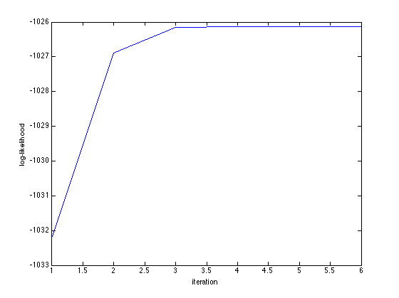

Dirichlet-Multinomial distribution
A demo of random number generation, density evaluation, and distribution fitting for the Dirichlet-Mutlinomial distribution
Contents
Generate Dirichlet-Multinomial random vectors
clear; % reset random seed s = RandStream('mt19937ar','Seed',2); RandStream.setGlobalStream(s); % sample size n = 100; % # bins d = 5; % true parameter values alpha = 1:d; % set batch sizes (ranges from 25 to 50) batchsize = 25+unidrnd(25,n,1); % generate random vectors X = dirmnrnd(batchsize,alpha,n);
Evaluate Dirichlet-Multinomial (log) pdf at true parameter value
logL = dirmnpdfln(X,alpha); display(sum(logL));
ans = -1.0282e+03
Fit Dirichlet-Multinomial distribution
tic; [alpha_hat, stats_dm] = dirmnfit(X); toc; display([alpha_hat, stats_dm.se]); display(stats_dm); figure; plot(stats_dm.logL_iter); xlabel('iteration'); ylabel('log-likelihood');
Elapsed time is 0.004149 seconds.
ans =
0.9495 0.1300
2.1979 0.2670
2.7269 0.3231
3.9027 0.4525
4.7257 0.5470
stats_dm =
BIC: 2.0753e+03
AIC: 2.0623e+03
dof: 5
iterations: 6
logL: -1.0261e+03
logL_iter: [1x6 double]
se: [5x1 double]
gradient: [5x1 double]
LRT: 445.1073
pvalue: 0
